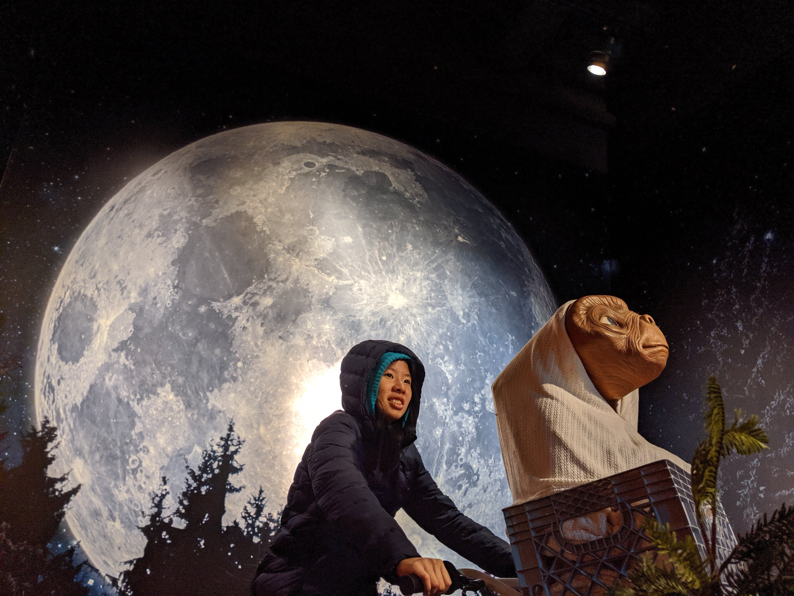

Hi, I'm Ray Hsiao!
I'm a first year computer science major at UCLA interested in digital media, particularly video games. I've been involved with ACM Studio, UCLA's game development club, since the summer, and I'm currently one of the club's officers! In my free time (or more accurately, when I'm procrastinating), I like drawing, playing video games, and occasionally running.
I am a new cartographer, and having this class as my introduction to mapmaking has been important in dismantling the preconceptions I had about maps before. I want to facililate the creation of maps that center community voices. The project my group is working on emphasizes tenants' rights with consideration of the many different languages people speak in Los Angeles.
Projects- Marketed and drew promotional comic for The Space in Between, a visual novel that explores Asian-American identity and mental health
- Participated in multiple game jams as an artist
- Ramen for Two, a visual novel developed for a 48-hour game jam (theme: "Past, Present, and Future")
- Anything for You, a wholesome point-and-click game for Ludum Dare 47 (theme: "Stuck In a Loop")
- You Again, a side-scroller narrative game for Berklee College's Game Music Jam (theme: "Deja Vu")
- Created a simple interactive website about myself with HTML and CSS
- Genshin Impact (still playing; my in-game name is "deepestregrets")
- Pokemon Cafe Mix (quit playing; it's not very fun but the art is super cute)
- Animal Crossing: New Horizons (super inconsistently playing; the size of my island overwhelms me)
- Pokémon Sword (quit playing; maybe I'll go back to finish the dex)
- Arknights (still playing; used to be most of my social life)
- Pokémon GO (super inconsistently playing; I literally can't go outside)
- Among Us (super inconsistently playing; friends don't really play anymore)